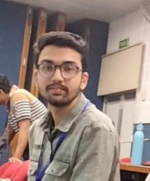

I am currently pursuing my B.Tech in Instrumentation and Control Engineering at Dr. B. R. Ambedkar National Institute of Technology Jalandhar. My academic journey has helped me build a strong foundation in control systems, electronics, signal processing, and automation. I have a deep interest in technology and enjoy exploring how systems work—both in hardware and software. Alongside my core subjects, I am highly enthusiastic about web development. I love building interactive and user-friendly web applications, and I constantly work on improving my programming and problem-solving skills. I enjoy debugging, optimizing code, and understanding the logic behind algorithms. For me, learning is a continuous process, and I actively try to bridge the gap between my core engineering knowledge and modern software technologies. My goal is to grow as a tech professional who can combine engineering fundamentals with software expertise to build impactful and innovative solutions.
I did my schooling from Police DAV Public School. Completed 10th in 2022 and:
| Standard | Percentage | position |
|---|---|---|
| 10th | 97.4 | Second(out of 190 students) |
| 12th | 94.6 | First |